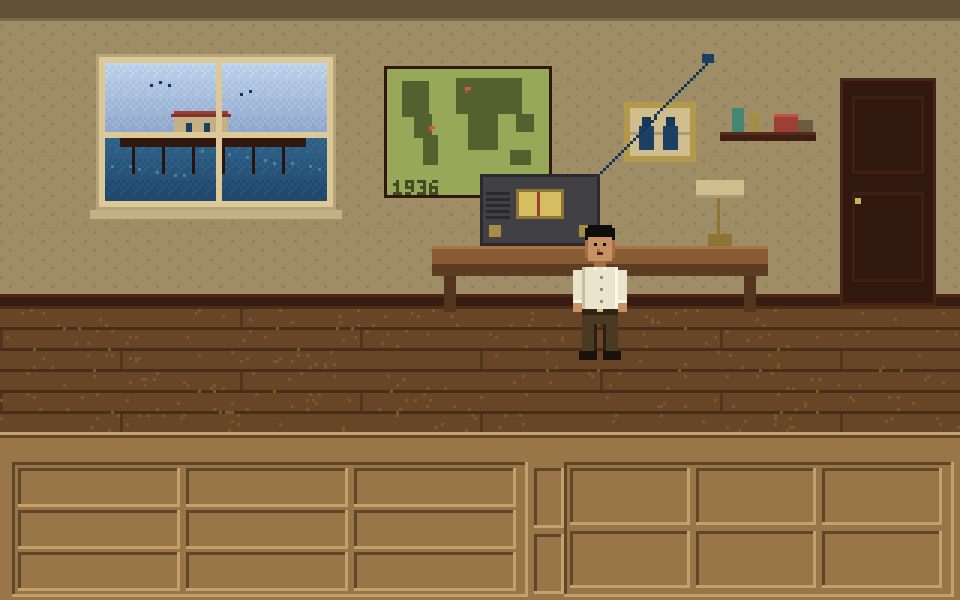

Nick Coston
Thirteen years inside localization and dubbing pipelines, five putting generative models into them.
Work
Dub Room
One scene, carried into Spanish twice: once as a literal translation, once as an adapted dub. Both are measured against the same picture for timing and lip closures. Play either one and watch where the voice drifts off the mouth.
Show Prep
Weekly prep for a team podcast, built by an agent the night after the game: a talk track, a deck and a graphic for every card. An eval checks that every number traces to a source, including when a fact is missing, two sources disagree, or a fact tries to give the model orders.
Brij and the Long Wave
An original 1930s pulp mystery adventure, written for the real SCUMM engine. It compiles to SCUMM v6 bytecode and runs in stock ScummVM. Brij runs a radio repair shop on the Santa Monica pier in 1936. Both his parents are missing, and every night at ten past three his set picks up a signal that shouldn't exist.

The Victors
A Michigan message board that had run continuously since 1995 lost its host and died. I rebuilt it in six days by directing a coding agent: Python, SQLite, plain HTML, $7 a month. About 350 members use it. The write-up includes the incident log: the real production failures and what I did about each one.